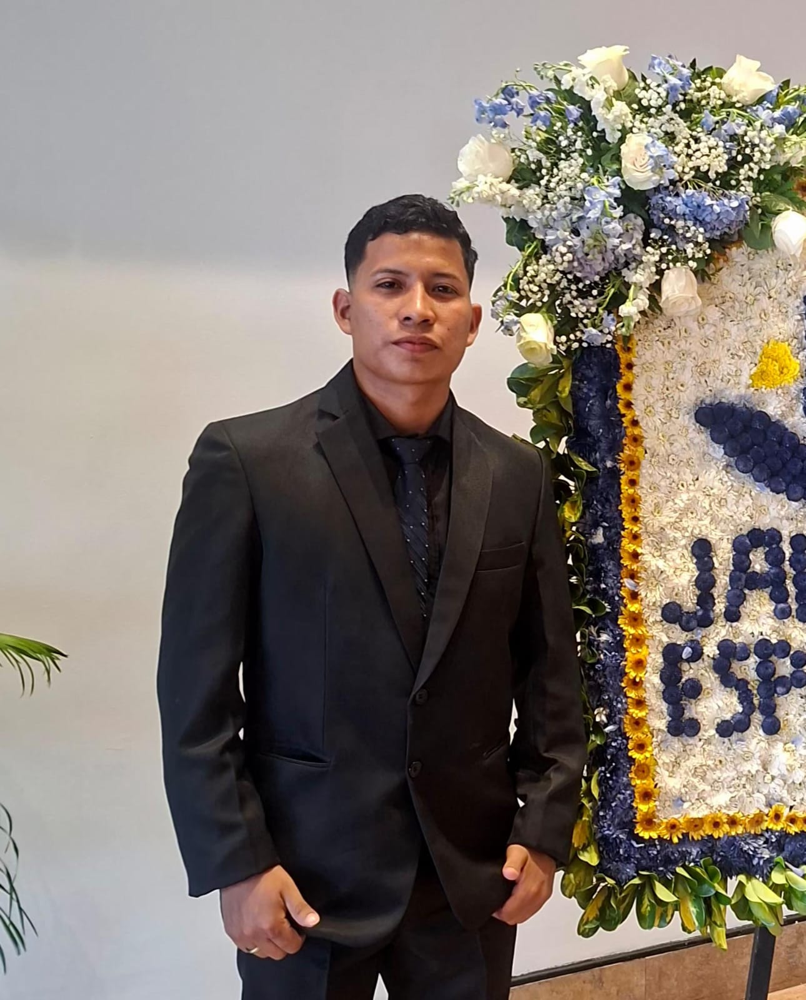

Ingeniería en Sistemas
Estudiante de cuarto semestre.
Currículum Vitae
Tecnólogo en Desarrollo de Software · Estudiante de Ingeniería en Sistemas
📍 Guayaquil, Ecuador

Desarrollarme profesionalmente en las áreas de gestión de proyectos o análisis, aportando mis conocimientos en sistemas, organización y coordinación de actividades. Busco participar en la planificación, seguimiento y mejora de procesos, contribuyendo al cumplimiento de objetivos mediante el trabajo en equipo, la responsabilidad y el aprendizaje continuo.
Soy Tecnólogo en Desarrollo de Software, graduado en 2024, y actualmente estudio Ingeniería en Sistemas en la Universidad de Guayaquil, cursando el cuarto semestre. Cuento con experiencia en trabajo operativo y conocimientos complementarios en bodega y logística. Me caracterizo por ser una persona responsable, proactiva y organizada, con capacidad para trabajar en equipo y disposición para aprender y mejorar continuamente.
Estudiante de cuarto semestre.
Título de tecnólogo.
Formación complementaria en el área de bodega y logística.
Ejecución de actividades operativas, apoyo en la organización de tareas y coordinación con el equipo. Cumplimiento de responsabilidades diarias para mantener el orden y contribuir a la correcta gestión del área.